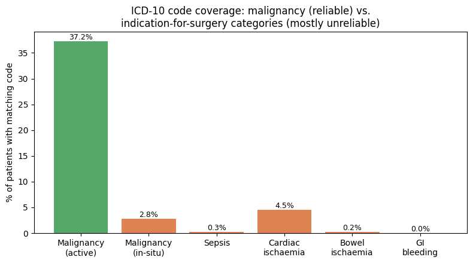

INSPIRE Project — Complete Findings Summary¶
Everything resolved or empirically tested so far, consolidated in one place: every real number, every table, every plot. Sections 1-5 have real findings below. Sections 6-8 remain genuinely open — no data resolution attempted yet, listed at the end for completeness.
1. The Mortality Label — ✅ RESOLVED¶
The answer: True 30-day mortality = 469 deaths / 99,886 patients = 0.47% (not 942 / ~0.9% from the raw folder label).
| Component | Count |
|---|---|
| Total cohort | 99,886 |
| Folder-labeled "died" | 942 |
| True 30-day deaths (settled) | 469 |
| ...single-op patients | 301 |
| ...multi-op patients | 168 (111 + 57) |
| Folder-labeled "died" but died after 30 days | 473 |
Still open: whether 30-day all-cause is the right window (vs. 90-day/in-hospital), and whether the 473 "died after 30 days" should be their own labeled cohort.
2. Multi-Operation Patients — ✅ RESOLVED¶
Does operation count itself predict risk? Yes.

| Operations | Mortality | Patients |
|---|---|---|
| 1 | 0.4% | 78,321 |
| 2 | 0.6% | 15,869 |
| 3 | 1.2% | 3,689 |
| 4 | 1.3% | 1,189 |
| 5+ | 1.0% | 818 |
Which operation should anchor the 30-day label — first or last?

| Survived (first-op) | Died (first-op) | |
|---|---|---|
| Survived (last-op) | 21,397 | 0 |
| Died (last-op) | 111 | 57 |
Only 111 of 21,565 multi-op patients get a different answer depending on anchor — and the disagreement only ever runs one direction (mathematically guaranteed).
Why only one direction — the time gap between operations:

- Median gap for the 111 flip patients: 11 months (mean 700 days, up to ~8 years)
- Conclusion: last-operation is the correct anchor. These aren't staged procedures — they're old, unrelated earlier surgeries followed by a separate, later operation. 469 is the settled, defensible death count.
3. ASA, POSSUM, NELA — 🔶 DATA CHECKS DONE, clinical sign-off still needed¶
ASA alone is a very strong predictor:
| ASA class | Mortality | Patients |
|---|---|---|
| 1 | 0.07% | 34,748 |
| 2 | 0.17% | 54,107 |
| 3 | 2.16% | 8,024 |
| 4 | 10.3% | 464 |
| 5 | 24.2% | 33 |
| 6 | 82.5% | 57 |
Real INSPIRE field availability for POSSUM/NELA (5,000-patient audit):
| Field | Status | Note |
|---|---|---|
| age | ✅ Available | Static field |
| systolic_bp | ✅ Available (renamed) | nibp_sbp, 98.2%/99.4% |
| pulse | ✅ Available (renamed) | hr, 98.4%/100% |
| hb, wbc, sodium, potassium, albumin | ✅ Available | 93-95% |
| urea | ✅ Available (renamed) | bun, 93.2% |
| n_procedures | ✅ Available | n_operations, 100% |
| blood_loss | ✅ Available (renamed) | ebl, 59.3% |
| gcs | ⚠️ Partial | Only 8.4% coverage, not random (see below) |
| urgency banding | ⚠️ Partial | Only binary emop |
| malignancy | ✅ Derivable | 37.2% via ICD-10 |
| sepsis/ischaemia/bleeding indication | ❌/🔧 Attempted, unreliable | Narrow code ranges — likely fixable, see Section 5 |
| cardiac/respiratory exam grade, ECG, peritoneal soiling | ❌ Not available | Genuinely absent from dataset |
GCS missingness by department/urgency/ASA (proves it's not random):
| Breakdown | GCS coverage |
|---|---|
| CTS (cardiothoracic) | 37.5% |
| NS (neurosurgery) | 25.2% |
| Most other departments | 1.7%–7.5% |
Emergency (emop=1) |
20.7% |
Elective (emop=0) |
7.1% |
| ASA 6 | 60.0% |
| ASA 1 | 3.2% |
ICD-10 malignancy/indication coverage (first-pass, narrow code ranges):

| Category | Coverage |
|---|---|
| Malignancy (active) | 37.2% |
| Malignancy (in-situ) | 2.8% |
| Sepsis | 0.3% |
| Cardiac ischaemia | 4.5% |
| Bowel ischaemia | 0.2% |
| GI bleeding | 0.0% |
Likely explanation, not yet re-confirmed: narrow hand-picked codes (A40-A41) instead
of full WHO chapter ranges (A00-B99) — corrected audit code exists in
ICD10_Architecture_Research.md, rerun pending.
Still open: whether ASA is circular with model predictions, whether POSSUM/NELA add value beyond ASA, and clinical sign-off on ICD-10-derived indication categories.
4. Frailty (HFRS) — ✅ RESOLVED (real bug found and fixed)¶
Bug confirmed directly in the code: the 2-year lookback window was never implemented, and the age≥75 eligibility check was written but commented out.
Real impact of fixing it (5,000-patient sample):
| Value | |
|---|---|
| Patients actually age-eligible (75+) | 735 / 5,000 (14.7%) |
| Mean score, current (no window) | 7.48 |
| Mean score, corrected (2-yr window) | 3.74 |
| Eligible patients who change category | 119 / 735 (16.2%) |

| Category | Current mortality | Corrected mortality |
|---|---|---|
| Low | 0.97% | 1.01% |
| Intermediate | 1.80% | 1.19% |
| High | 1.96% | 4.08% |

| Current → | High | Intermediate | Low |
|---|---|---|---|
| High | 49 | 37 | 16 |
| Intermediate | 0 | 47 | 63 |
| Low | 0 | 0 | 513 |
Key finding: the corrected version is a genuinely better predictor — current HFRS barely separates intermediate from high mortality (1.80% vs 1.96%); corrected HFRS shows a clean 4x jump at high frailty. Fixing the bug isn't just methodologically correct, it makes the score more clinically useful.
Still open: whether this matches clinical expectation, and whether HFRS (only applicable to ~15% of this cohort) is worth the complexity vs. a simpler age-based proxy.
5. Organ-System Feature Grouping — ✅ RESOLVED (literature + data-driven)¶
Literature evidence¶
- SOFA (Vincent et al. 1996) — the clinical gold standard — uses exactly 6 organ systems, near-identical to ours, and deliberately has no 7th "infection" system.
- Sepsis-3 (Singer et al. 2016, JAMA) — defines sepsis as infection triggering a SOFA change. Infection is a cross-cutting flag, not a competing system.
- ICD-10's own WHO chapter structure independently agrees — Chapter I (infectious disease, A00-B99) is its own dedicated chapter, separate from every organ chapter. Two independent sources reach the same conclusion.
- Decision: no 7th infection system. CRP/WBC stay in haematology (they're blood tests) and also serve as an infection-context flag.
Complete ICD-10 chapter mapping (all 22 chapters checked)¶
| Letter(s) | Chapter | Maps to |
|---|---|---|
| A-B | Infectious diseases | Infection context flag |
| C, D(00-49) | Neoplasms | Malignancy (handled separately) |
| D(50-89) | Blood/blood-forming organs | ✅ haematology_coag |
| E | Endocrine/metabolic | ✅ metabolic_hepatic |
| F | Mental disorders | Out of scope |
| G | Nervous system | ✅ neurological |
| H | Eye/ear | Out of scope |
| I | Circulatory | ✅ cardiovascular |
| J | Respiratory | ✅ respiratory |
| K | Digestive | ✅ metabolic_hepatic (K70-K77 = liver) |
| L | Skin | Out of scope |
| M | Musculoskeletal | Frailty-adjacent (HFRS fracture codes) |
| N | Genitourinary | ✅ renal |
| O, P, Q | Pregnancy/perinatal/congenital | Out of scope |
| R | Symptoms/signs | R57 (shock) — one of our own top mortality codes, initially missed |
| S-T | Injury/poisoning | Trauma-adjacent |
| V-Y | External causes | Not clinically useful as a feature |
| Z | Health status | Z94 (transplant) sub-codes map by organ: kidney/heart/lung/liver |
Better long-term alternative found: AHRQ/HCUP's CCSR — 530+ official clinical
categories across 21 body systems, free, government-maintained, far more granular than
hand-rolled letter mapping. Recommended foundation for the DX_EMB pipeline component.
Data-driven validation — real hierarchical clustering on 5,000 patients¶

Strongly confirmed (tight, independent clusters matching assigned systems): creatinine+bun (renal), alt+ast (hepatic), ptinr+aptt (coagulation), sodium+chloride (renal), hco3+ph+paco2 (acid-base).
CRP/WBC finding — supports the cross-cutting-flag decision: WBC actually correlates more with platelet (haematology) than CRP; CRP's single strongest correlate is albumin (r=-0.487 — the classic acute-phase response: CRP rises, albumin falls). Real evidence these markers genuinely span systems rather than owning one.
Lactate — genuinely unresolved, not a clean confirmation:
| lactate's top correlates | r | Assigned system |
|---|---|---|
| hco3 (bicarbonate) | -0.207 | respiratory |
| glucose | +0.204 | metabolic_hepatic |
| ph | -0.161 | respiratory |
| ptinr | +0.123 | haematology_coag |
| hr (heart rate) | +0.120 | cardiovascular |
All correlations are weak (max 0.21). Literature says cardiovascular (perfusion/shock marker); data leans slightly toward acid-base chemistry instead. Two caveats limit this: only 10% of patients have a pre-op lactate at all (likely a biased, sicker subsample), and lactate's clinical role is fundamentally about trends, which a single pre-op value can't capture. Kept as cardiovascular (literature-backed default), flagged as open, not settled.
Still open: final clinical sign-off on all of the above.
6-8. Not Yet Resolved — no data analysis attempted¶
- Section 6 — Scope (pre-op only vs. peri-operative vs. post-op): a product decision, not a data question. Recommendation on file: start pre-op only.
- Section 7 — Concept Bottleneck: needs clinical staging definitions (AKI, haemodynamic instability, respiratory failure) before any building can start.
- Section 8 — Departments: one model vs. department-specific models — needs clinical input on whether department physiology differs enough to warrant separate models.
Quick reference — all supporting files¶
| Topic | File |
|---|---|
| Full clinician-facing question list | Clinician_Questions.md |
| ASA/POSSUM/NELA math, references, field audit | ASA_POSSUM_NELA_Theory_and_Validation.md |
| ICD-10 chapter mapping, embedding methods literature | ICD10_Architecture_Research.md |
| Organ-system grouping code (revised) | multimodal_step1_organ_systems.py |
| Clustering validation code | organ_system_clustering_validation.py |
| HFRS correction code | hfrs_corrected_comparison.py |
| Multi-op deep-dive code | multi_op_analysis_cell.py |